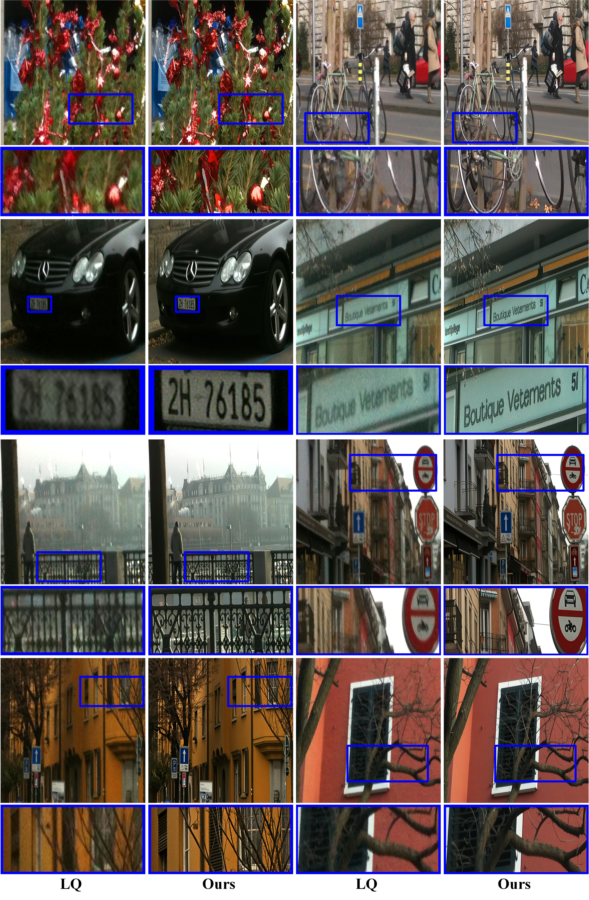

Abstract
Diffusion bridge models have shown great promise in image restoration by explicitly connecting clean and degraded image distributions. However, they often rely on complex and high-cost trajectories, which limit both sampling efficiency and final restoration quality. To address this, we propose an Energy-oriented diffusion Bridge (E-Bridge) framework to construct a set of low-cost manifold geodesic trajectories to boost the performance of the proposed method. We achieve this by designing a novel bridge process that evolves over a shorter time horizon and makes the reverse process start from an entropy-regularized point that mixes the degraded image and Gaussian noise, which theoretically reduces the required trajectory energy. To ensure this trajectory approximates a geodesic on the data manifold, we innovatively leverage a pretrained denoiser as a dynamic geodesic guidance field. To solve this process efficiently, we draw inspiration from consistency models to learn a single-step mapping function, optimized via a continuous-time consistency objective tailored for our trajectory, so as to analytically map any state on the trajectory to the target image. Notably, the trajectory length in our framework becomes a tunable task-adaptive knob, allowing the model to adaptively balance information preservation against generative power for tasks of varying degradation, such as denoising versus super-resolution. Extensive experiments demonstrate that our E-Bridge achieves state-of-the-art performance across various image restoration tasks, while enabling high-quality recovery with a single or fewer sampling steps.
Method

(a) Standard Diffusion Models: These traverse a long, high-energy trajectory starting from pure Gaussian noise to the clean image manifold, conditioned on the degraded image, they generate all information from scratch. (b) Conventional Bridge Models: These construct a path from the degraded to the clean image but often follow a sub-optimal, high-energy trajectory that includes a redundant "re-noising" phase before denoising. (c) Ours E-Bridge: It starts the reverse process from an entropy-regularized point, which is a mixture of the degraded image and noise, thus bypassing the inefficient re-noising phase and creating a more direct and shorter path for restoration.
Results

